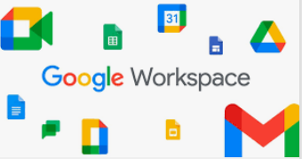
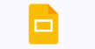
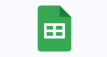

<html>
    <head>
        <meta charset="UTF-8">
        <meta name="viewport" content="width=device-width, initial-scale=1.0">
        <title>Recursos_Google</title>
        <link href="https://cdn.jsdelivr.net/npm/bootstrap@5.3.3/dist/css/bootstrap.min.css"
        rel="stylesheet" integrity="sha384-QWTKZyjpPEjISv5WaRU9OFeRpok6YctnYmDr5pNlyT2bRjXh0JMhjY6hW+ALEwIH" crossorigin="anonymous">
        <script src="https://cdn.jsdelivr.net/npm/bootstrap@5.3.3/dist/js/bootstrap.bundle.min.js" integrity="sha384-YvpcrYf0tY3lHB60NNkmXc5s9fDVZLESaAA55NDzOxhy9GkcIdslK1eN7N6jIeHz" 
        crossorigin="anonymous"></script>
       
        <style>
            body{
                background-color: rgb(201, 226, 235);
                p{
                    color: rgb(0, 0, 0);
                    font-size:10px;
                    font-family: Verdana, Geneva, Tahoma, sans-serif;
                    text-align: justify;
                }
                .título{
                    text-align: center;
                    color: rgb(15, 171, 233);
                    font-family: Comic Sans MS;
                    padding: 1px;
                    margin 5px auto;
                    border: 2px blue;
                    background-color: aliceblue;
                }
        
                }
                #pie{
                font-family: Comic Sans MS;
                font-size: small;
                color: rgb(26, 89, 160);
                text-align: center;
            
            }
            }
        </style>
         <link rel="icon" href="recursos.PNG" type="image/X-icon">
        
          
    
    </head>
</html>
<body>
<header>
    <div class="título"><h1 title= "IES Francisco Giner de los Ríos">Recursos de Google</h1>
    
    <br>
    <br>
</div>
</header>
<div class="accordion" id="accordionExample">
    <div class="accordion-item">
      <h2 class="accordion-header">
        <button class="accordion-button" type="button" data-bs-toggle="collapse" data-bs-target="#collapseOne" aria-expanded="true" aria-controls="collapseOne">
         Recursos de Google
        </button>
      </h2>
      <div id="collapseOne" class="accordion-collapse collapse show" data-bs-parent="#accordionExample">
        <div class="accordion-body">
           Los <strong>recursos de Google</strong>  son una amplia gama de herramientas y servicios que la empresa ofrece, muchos de los cuales están especialmente diseñados para mejorar la productividad, la colaboración y el aprendizaje en diversos ámbitos, incluyendo el educativo. En el contexto de la educación,
          Google proporciona soluciones que facilitan tanto a estudiantes como a docentes el acceso a contenidos, la colaboración en proyectos y la organización del trabajo.
        </div>
      </div>
    </div> 
    <br>
    <hr>
  
  <a href="https://accounts.google.com/lifecycle/steps/signup/name?continue=https://mail.google.com/mail/&ddm=1&dsh=S1547166797:1730482134857761&ec=asw-gmail
  -+++++++++++globalnav-create&flowEntry=SignUp&flowName=GlifWebSignIn&service=mail&theme=glif&TL=AKOx4s0c2BSAGcXtOZbauW73E_qIrfm_iErZ3A1hZQgtiN2_jGxdcq6ke4ej3vzz">
  <h5>Crear una cuenta Google</h5></a> 
  <p>Aunque algunas cuentas de EducaMadrid permiten trabajar con diferentes aplicaciones que vamos a utilizar durante el año, es recomendable que los padres 
    autoricen y creen una cuenta para sus hijos con Google, para que puedan trabajar en ellas sin problemas  </p>
  <br>
  <hr>
  
  <a href="https://accounts.google.com/InteractiveLogin/identifier?continue=https%3A%2F%2Fmail.google.com%2Fmail%2F%3Fhl%3Des&ddm=1&emr=1&flowEntry=ServiceLogi
  n&flowName=GlifWebSignIn&hl=es&ifkv=AcMMx-ewrxdKlGnD-j4kkj56IIlO9VlQGtoTl4MuxOL3fC_P3GsjXE3qhMqRuhXZmGpoJJbQWZHMNw&ltmpl=default&ltmplcache=2&osid=1&passive=
  true&rm=false&scc=1&service=mail&ss=1"><h5>Correo Gmail</h5></a> 
  <p>Correo electrónico: Gmail es el servicio de correo electrónico de Google, que se utiliza en el ámbito educativo para la comunicación entre estudiantes,
    profesores y familias.  En EducaMadrid, los estudiantes y docentes disponen de cuentas de correo con el dominio @educa.madrid.org.</p>
    <br>
    <hr>
   
  <a href="https://workspace.google.com/products/drive/"><h5>Drive</h5></a> 
  <p><ul>
    <li><p>Almacenamiento en la nube: Google Drive permite a los usuarios almacenar documentos, fotos, videos y otros archivos de forma segura en la nube, accesibles desde
         cualquier dispositivo con conexión a Internet.</p></li>
     <li><p> Colaboración: Se pueden crear carpetas compartidas para facilitar el trabajo en equipo, y los archivos se sincronizan en tiempo real, permitiendo editar 
        documentos de manera conjunta.</p></li>
     <li> <p>Espacio gratuito: Google ofrece 15 GB de almacenamiento gratuito para todos los usuarios.</p>
        </li>
  </ul></p>
  <div class="accordion" id="accordionExample">
    <div class="accordion-item">
      <h2 class="accordion-header">
        <button class="accordion-button" type="button" data-bs-toggle="collapse" data-bs-target="#collapseOne" aria-expanded="true" aria-controls="collapseOne">
         Ofimática Google
        </button>
      </h2>
      <div id="collapseOne" class="accordion-collapse collapse show" data-bs-parent="#accordionExample">
        <div class="accordion-body">
           La <strong>ofimática de Google</strong>  conocida como Google Workspace (anteriormente G Suite), es un conjunto de aplicaciones y herramientas digitales diseñadas para la productividad, la colaboración y la gestión de documentos en línea. Este conjunto de herramientas incluye aplicaciones similares a las tradicionales de oficina (como procesadores de texto, hojas de cálculo y presentaciones), 
           pero con la ventaja de estar basadas en la nube, lo que permite el acceso y la colaboración en tiempo real desde cualquier dispositivo con conexión a Internet.
        </div>
      </div>
    </div> 
    <br>
    <hr>
  
  <a href="https://workspace.google.com/products/docs/"><h5>Procesador de textos</h5></a> 
  <p>Google Docs es una herramienta gratuita y basada en la web para la creación, edición y gestión de documentos de texto. Forma parte de Google Workspace (anteriormente conocido como G Suite), un conjunto de aplicaciones diseñadas para la productividad y colaboración en línea. Google Docs es similar a otros procesadores de texto como Microsoft Word, pero con la ventaja de ser 
    accesible desde cualquier dispositivo con conexión a Internet, lo que permite la colaboración en tiempo real y el almacenamiento en la nube. </p>
    <br>
    <hr>
  
  <a href="https://workspace.google.com/products/slides/"><h5>Presentación</h5></a> 
  <p>Google Sheets es una herramienta de hojas de cálculo en línea, parte de Google Workspace (anteriormente conocido como G Suite). Es gratuita y está basada en la web, lo que permite crear, editar, organizar y analizar datos de manera eficiente y colaborativa. Google Sheets es una alternativa a programas tradicionales como Microsoft Excel, 
    pero con la ventaja de estar en la nube, permitiendo el acceso, la edición y la colaboración en tiempo real desde cualquier dispositivo con conexión a Internet.</p>
    <br>
    <hr>
  
  <a href="https://workspace.google.com/products/sheets/"><h5>Hoja de cálculo</h5></a> 
  <p>Google Slides es una herramienta gratuita y basada en la web que forma parte de Google Workspace (anteriormente G Suite). Es una alternativa a otros programas de creación de presentaciones, como Microsoft PowerPoint, pero con la ventaja de estar completamente en la nube, lo que permite crear, 
    editar y colaborar en presentaciones en tiempo real desde cualquier dispositivo con acceso a Internet.</p>
    <br>
<hr>
<div id="pie">
<a href="index.html">
<button type="button" class="btn btn-outline-primary" disabled > Volver a la página principal</button></a>
<br>
<br>
<br>

     &copy; Ana Belén Martín Sánchez </div>
            
</body>